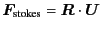

Next: ODE Parameters
Up: Massive Particles
Previous: Massive Particles
The reason why the effective dynamics above are implemented
rather than the simple Newton's equation of motion
where St is the true Stokes number
and
,
is that
the latter gives similar behavior in the massless dynamics
due to the strong (diverging) resistance in the lubrication.
[17]
** I'll implement this dynamics soon. **
Kengo Ichiki 2008-10-12